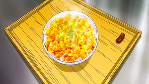

World's Awesome-est Food
Transforming Furikake Gohan

Serves 2-3 people
Ingredients:
- 7 Chicken Wings
- 1 Tbsp Sesame Oil
- Group A:
- 1 Tsp Grated Ginger
- 700cc Bonito Broth
- 1.5 Tbsp Sake
- 1.5 Tbsp Sugar
- 1.5 Tbsp Mirin
- 4 Eggs
- Minced Spring Onion
- Group B:
- 1 Tbsp sugar
- 1 Pinch salt
- Hot Steamed Rice
Directions:
- Heat the sesame oil in a frying pan and fry the chicken wings until they are browned.
- Put the chicken wings and the ingredients in Group A in a pot
- Put pot on high flame. When the contents boil, skim the scum from the broth.
- Put the broth in a tray, let it cool down and then refrigerate it.
- Take the chicken wings' bones out and cut the meat finely.
- Scramble eggs in a bowl and mix them with the ingredients in Group B.
- Put the mix in a frying pan on low flame and stir it quickly until the eggs are finely minced.
- When the refrigerated broth hardens, dice it, making the cubes about 1cm long.
- Put the jellied meat broth, the scrambled eggs, the chicken wings, and minced spring onion on hot rice
- VOILA!!!! Time to enjoy!